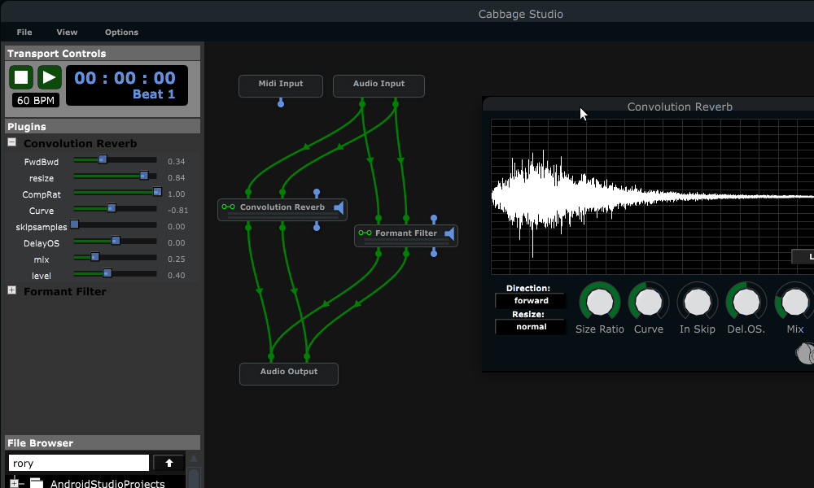
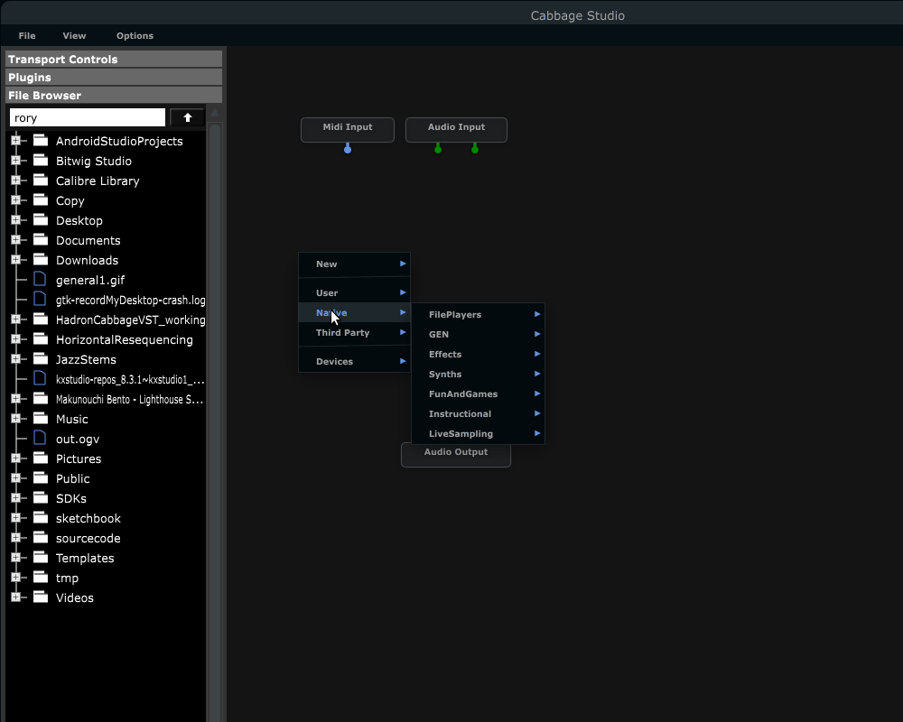
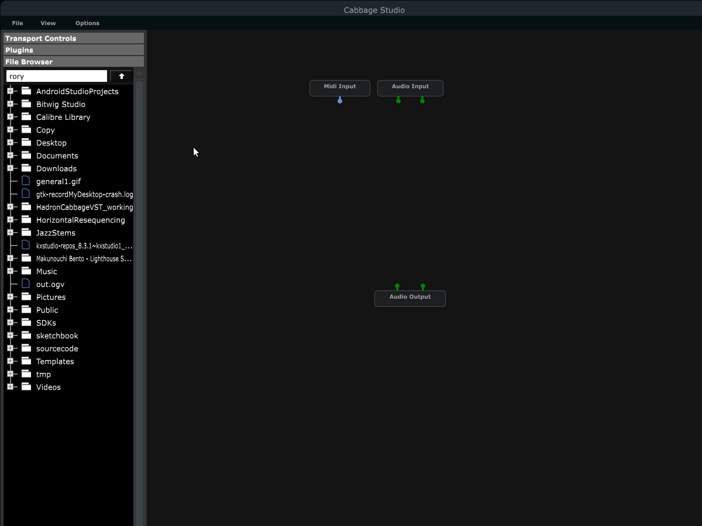
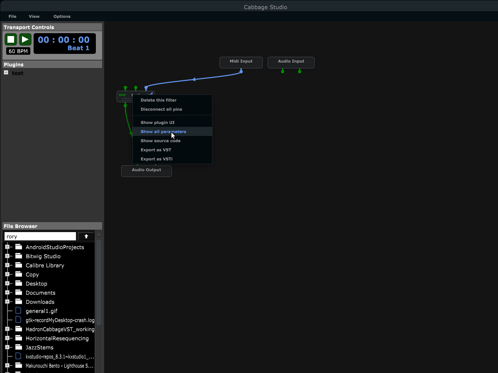

Cabbage Studio
Cabbage Studio is a new Csound based DAW that provides users with a fully functional patching interface and development environment. Each node in the graph can be a Csound instrument or a 3rd party audio plugin. Cabbage Studio ships with over 100 high-end Csound instruments, along with some native utility devices that can be used to increase speed of production of Cabbage audio plugins. The system also ships with a fully integrated development environment, featuring a full GUI editor for designing graphical interfaces.

With Csound at the core of the system, and with access to an embedded professional level GUI framework, users can turn Cabbage Studio into a custom DAW solution tailored to their own needs.
Getting started
The first thing to do when you start Cabbage studio is to set up a directory for Cabbage files. To do this, press the Options menu and click on the Preferences command. Then press the Cabbage Plugins tab. This will show a list of folders that Cabbage Studio will search each time a usre right-clicks on the main patcher window. To add a new folder just click the + button.
You should also select an audio device at this point by clicking on the Audio Setup tab. The selected audio device will be saved between sessions so you should only have to select the device once, unless you tend to hot swap devices while on the go.
Finally, you may also wish to add paths to selected third party plugins that you wish to use in Cabbage Studio. Click the Third party Plugin tab and add paths to any third party plugins you wish to use. Cabbage Studio will load most plugin types, including LADSPA, AudioUnit and VST.
Adding Nodes
Right-clicking anywhere in the main patcher window will cause a context menu to pop up. This menu will list: - the local Cabbage files found in any of the Cabbage plugin paths set in the preference. - all third party plugins found by Cabbage studio - over 100 ready to go instrument that are included with Cabbage Studio.
Each instrument node features controls for enabling and disabling audio as well as an audio bypass button. While disabling a node will mute its output, enabled bypass mode will output the input signal directly without any processing.

Creating new nodes.
New instruments can be added by right-clicking the patcher interface and selecting either New Instrument or New Effect. Cabbage will then prompt you to save your new instrument file. Once this process is complete, Cabbage will generate a basic instrument file that should serve well as a template for a new instrument, be it an effect, or synthesiser. In order to develop that instrument you can right-click on the newly created node and select the Show Source Code menu command. This will open the instrument's source code in the source code editor. 
Instrument GUIs can be developed using the integrated GUI designer. This designer is the same one that comes with the standalone version of Cabbage, but is better integrated to Cabbage Studio. Whilst in the source code editor, users can click the 'Edit mode' menu command to launch the GUI designer. When in Edit mode, users can right-click their instrument GUI to insert a range of GUI widgets. When a widget is placed on screen the corresponding code will be inserted into your instrument's code. Any changes you make to the widget's size and position will automatically be updated in your code. Widget properties can be set manually by typing directly into the Cabbage section of your instrument's source code, or by using the property dialogue window.
Note that you must hit the 'Esc' key on your keyboard whenever you update a widget property in the embedded widget properties dialogue. If you do not, your updated property will not be passed to the instrument's source code and will therefore be discarded. Users should get into the habit of updating/saving their instruments whenever they make changes to its user interface. Instruments need to be recompiled for any changes to stick.

MIDI Learn
Users can control any instrument parameters using MIDI. To map MIDI hardware to a plugin you must first make sure you have selected a MIDI device in the Audio Setup preference. Once this is done, click on a plugin and select the MIDI Learn command from the options menu, or press Ctrl+m. Then move the parameter you wish to map with your mouse. Following this, move the MIDI slider you wish to map t the parameter. This will hook the MIDI CC channel directly to your plugin's parameter. If you wish to change or modify any MIDI mappings at a later stage you may do so using the MIDI Mapping menu command, which can be accessed through the View menu.